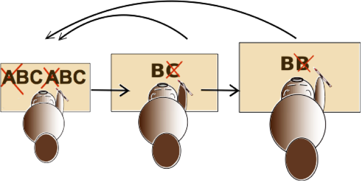

新森林時報
三隻海貍在新森林時報分別擔任助理編輯、編輯和總編輯；他們希望報紙上的文章可以讓森林裡的動物們比較容易理解，因此對文章內容制定了以下的編輯修正規則：

助理編輯從左到右閱讀文章，每當讀到字串“ABC”的時候，就用“BC”取代；而且取代完之後，就要從頭再讀一次。如果從頭到尾都沒有讀到“ABC”，就會把文章交給編輯。
編輯從左到右閱讀文章，當讀到字串“BC”的時候，就用“B”取代；取代完後，就把文章退還給助理編輯重看一次。如果他從頭到尾都沒有讀到“BC”，就把文章給總編輯看。
總編輯從左到右閱讀文章，當讀到“BB”這個字串的時候，就用“B”取代；取代完後，就把文章退還給助理編輯重看一次。如果他從頭到尾都沒有讀到“BB”，那這篇文章就完成修正了。
下列哪篇文章經過修正後不可能變成“B”呢？